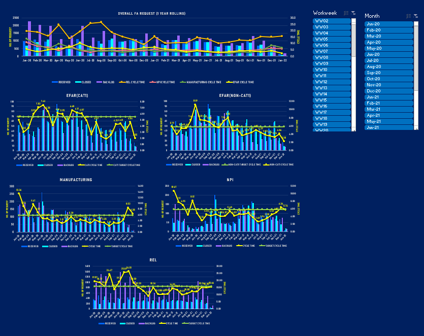

MS Excel Dashboard with VBA Automation
Product performance excel dashboards help visualize the overall metrics of an organization. This dashboard contains data from various customers of Product Analysis Lab (PAL) such as External Failure Analysis Request (EFAR), Manufacturing, NPI, and REL. It consists of the overall received requests, closed requests, backlogs, and cycle time.
The goal of this dashboard is to consolidate and organize the data per customer or category, to show how the overall received requests, closed requests, and backlogs affect the overall cycle per customer, and to categorize the data by choosing the workweek or months needed. Also to display the desired months and workweek through slicers.
Pivot tables and charts are used to achieve the goal of the dashboard. The overall source data is arranged in a separate excel sheet. A VBA code is inserted into the source data sheet to achieve a connection on all the pivot tables and charts whenever the source data will be edited. Then, a custom combination chart is applied per category (EFAR, Manufacturing, NPI, and REL) to easily visualize the data. Clustered column chart is used for the sum of the received requests, closed requests, and backlogs to compare multiple data series of each category directly and show the variance across different parameters. Line with markers is also used for the comparison of the average of both the actual cycle time and target cycle time. Slicers also indicate the current filtering state, which makes it easy to understand what exactly is currently displayed and to filter the workweek and months needed. A Pivot Table is an extremely powerful tool that you can use to slice and dice data. You can track, and analyze hundreds of thousands of data points with a compact table that can be changed dynamically to enable you to find the different perspectives of the data. It is a simple tool to use, yet powerful.
